El susurro de las raíces
Seis diapositivas · tres capas por plano. Mové el cursor sobre cada imagen para probar la profundidad.
1. Yggdrasil parece sano
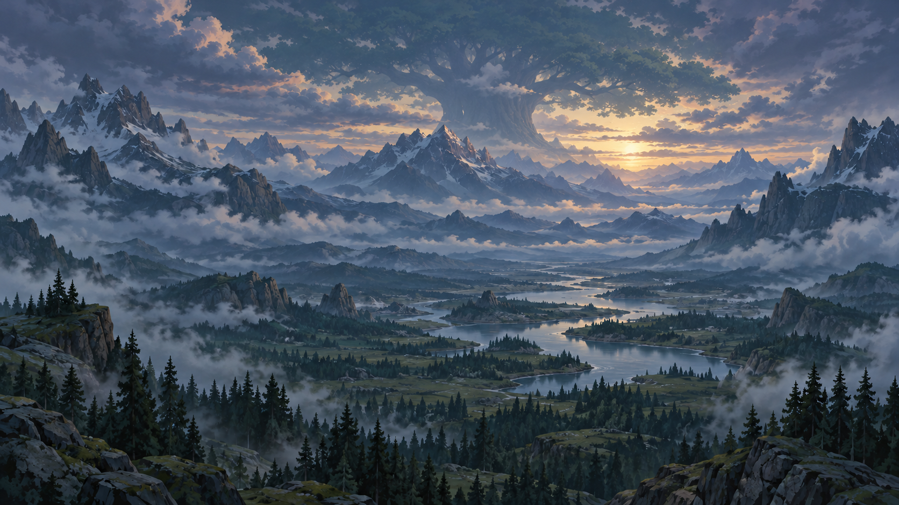
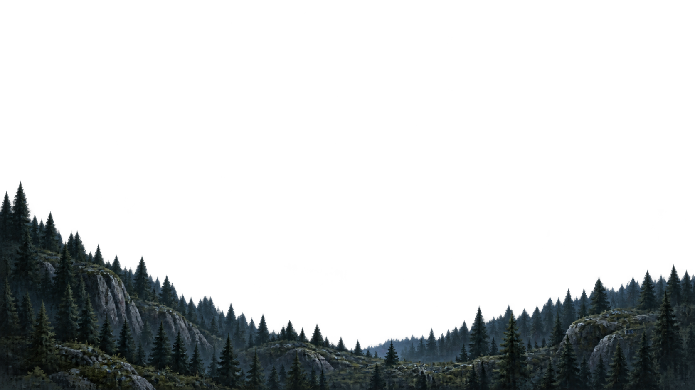
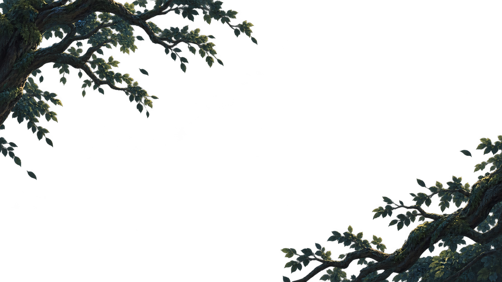
2. Las runas fallan
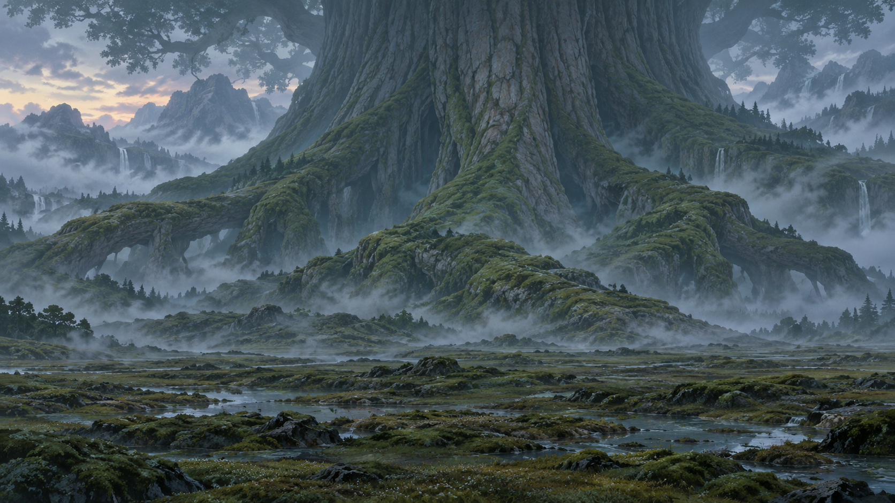
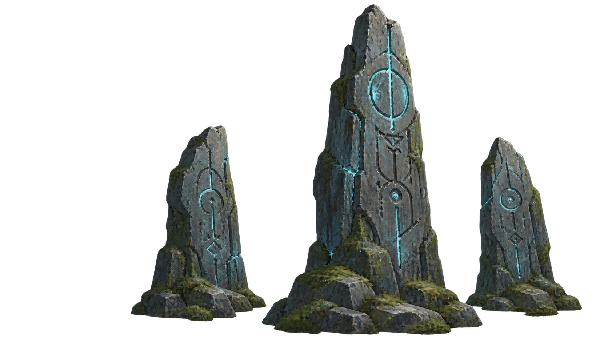
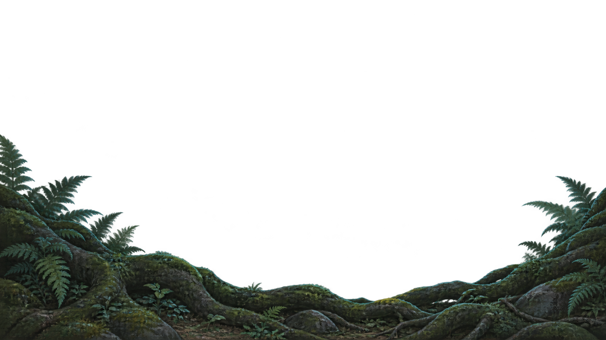
3. El contacto
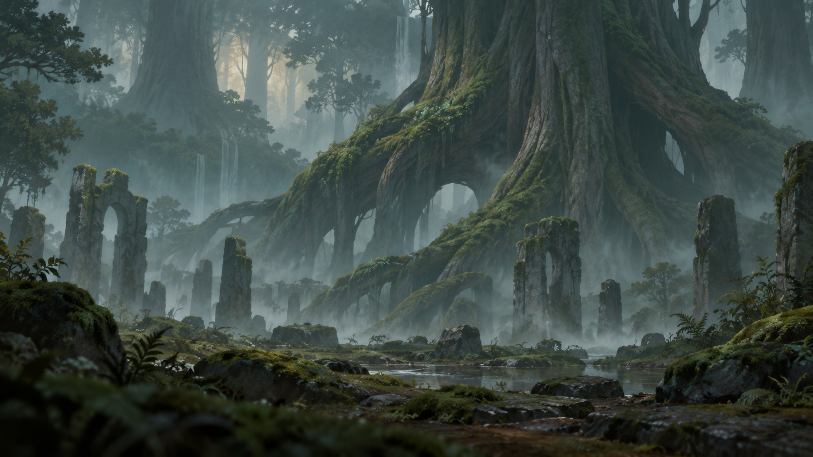
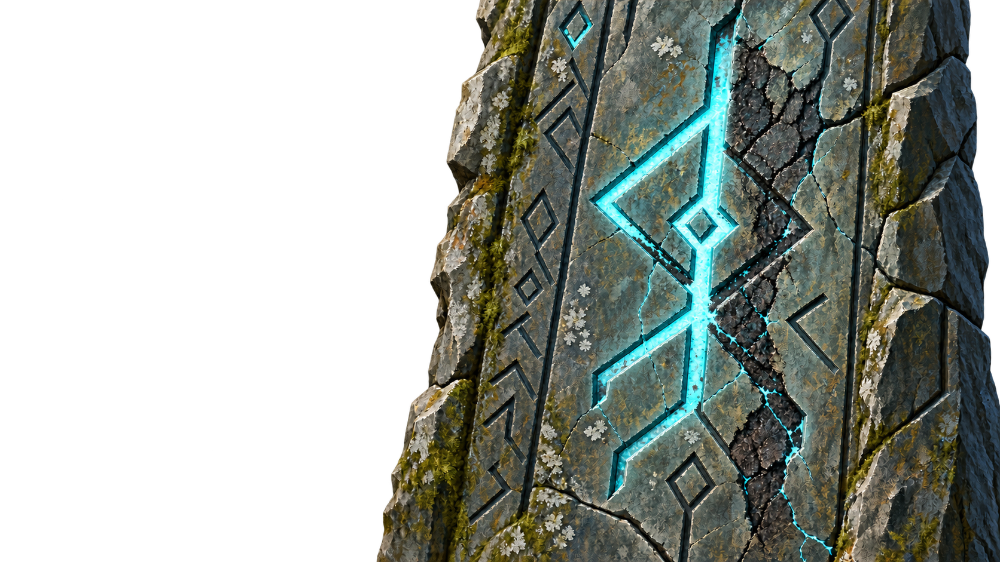
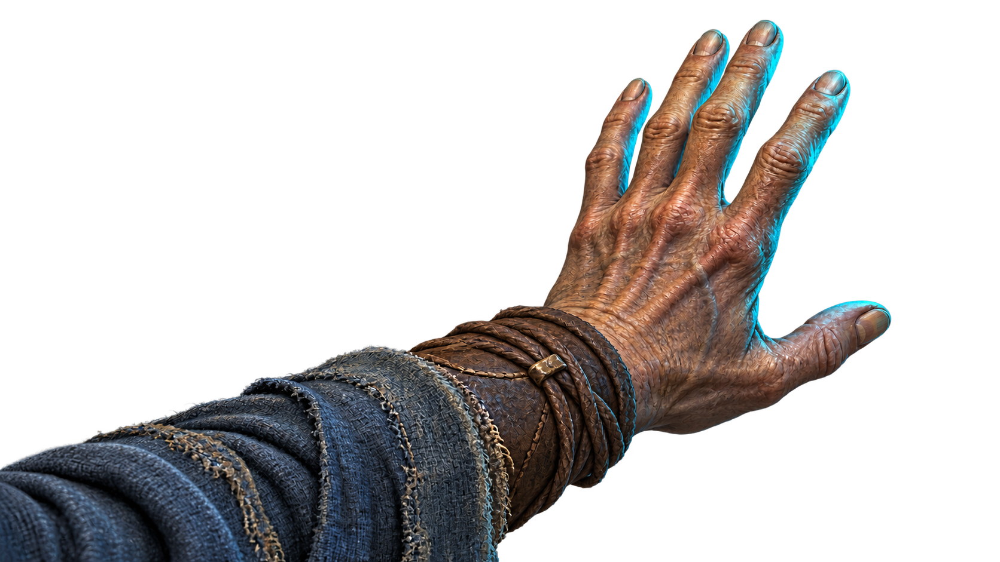
4. El lenguaje olvidado
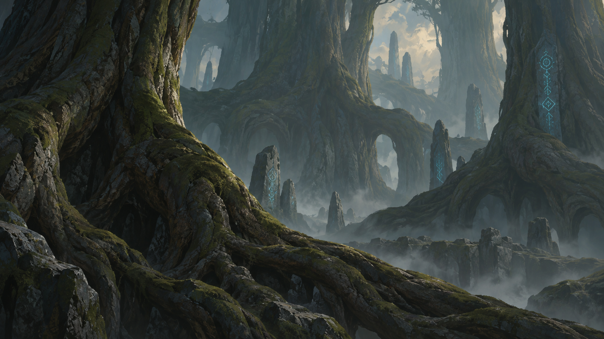
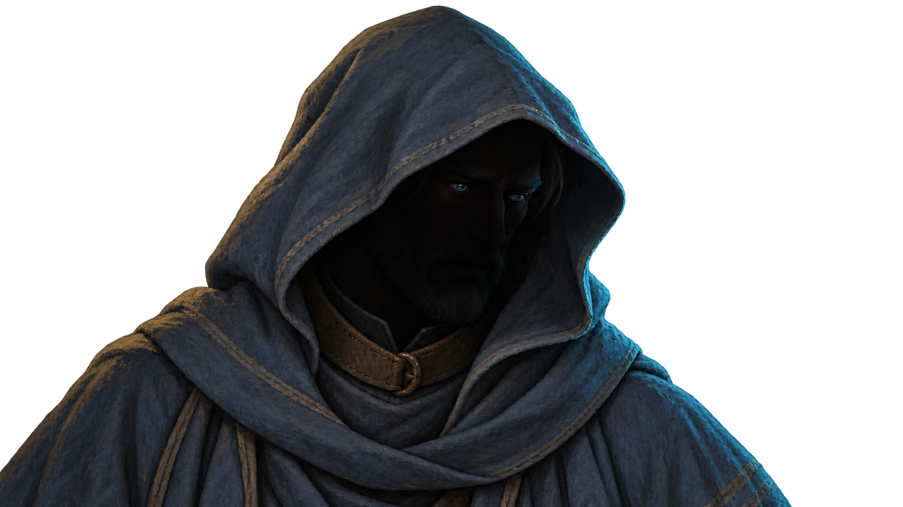
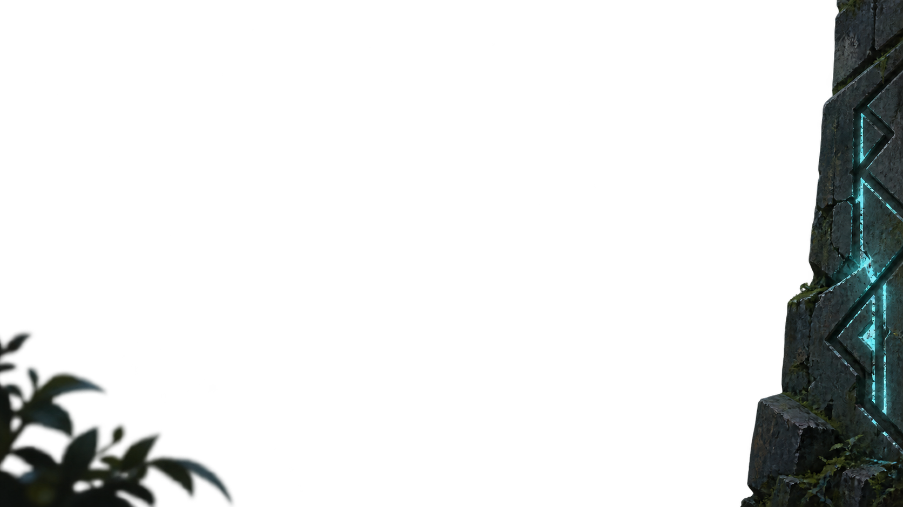
5. La tierra se abre
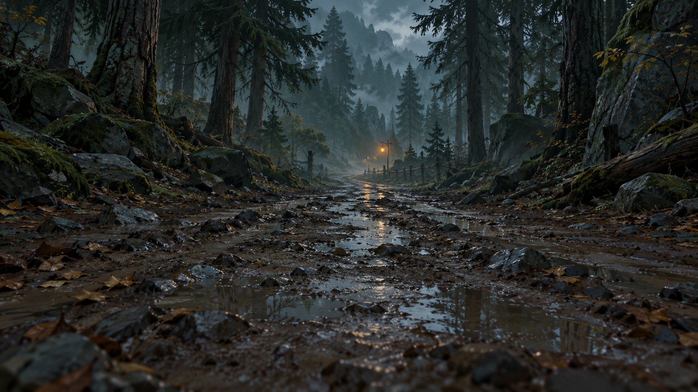
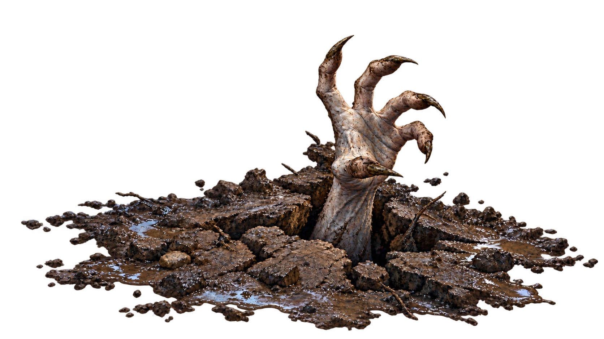
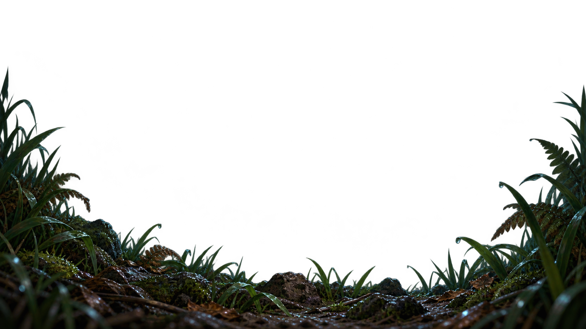
6. Los primeros errantes
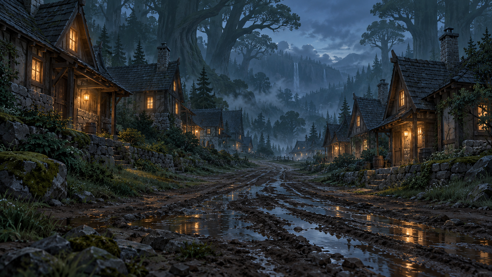
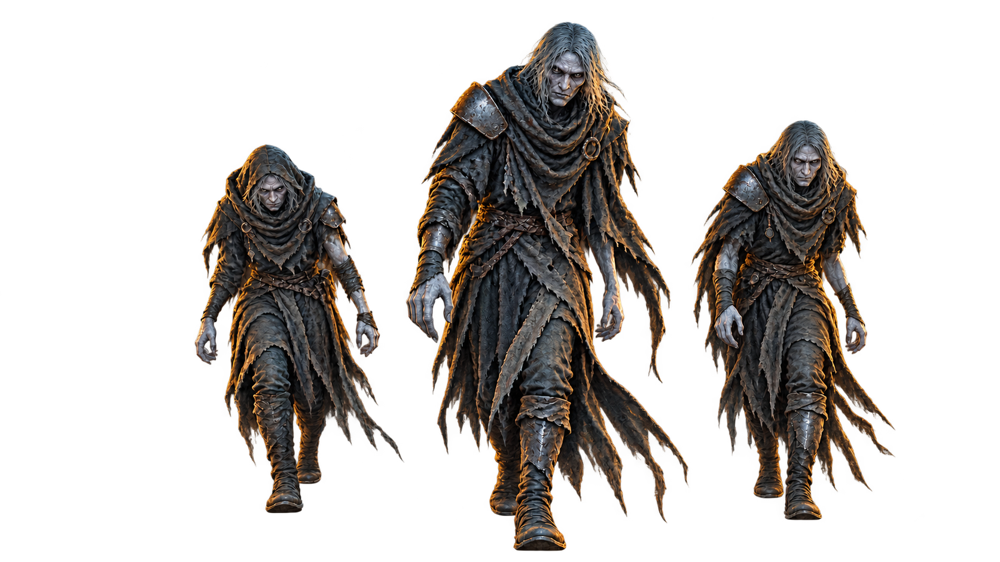
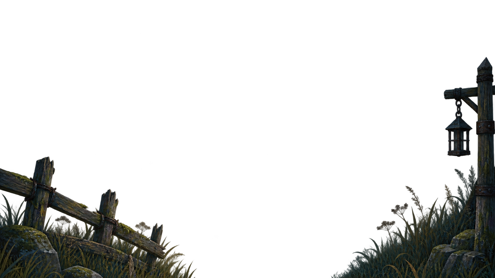